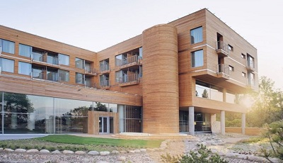
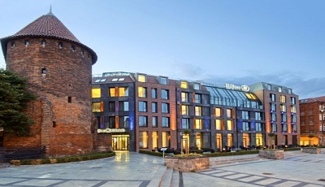

-
V - Hanza, Gdańsk
Czterogwiazdkowy hotel Hanza ma 2222 opinie. Użytkownicy Booking. com ocenili
go jako fantastyczny, przyznali mu 8,9 na 10 pkt., użytkownicy Trivago.pl przyznali
mu 90 pkt. na 100 możliwych do zdobycia, użytkownicy Tripadvisor.com przyznali 4,5 pkt.
na 5 możliwych do zdobycia. Hotel położony jest w centrum Gdańska, nad Motławą. Pokoje
są klimatyzowane, wyposażone w bezpłatny dostęp do Internetu, 32-calowy telewizor LCD,
minibar oraz zestaw do parzenia kawy i herbaty. W łazience jest suszarka do włosów i
zestaw kosmetyków. Atutem hotelu jest taras słoneczny z widokiem na Motławę.
W hotelu znajduje się centrum odnowy biologicznej z sauną i gabinetem masażu.
Cena pokoju 2-osobowego w sezonie letnim - 459 zł.
-
IV - Sheraton, Powstańców Warszawy 10, Sopot
Prawie 2 tys. użytkowników portali booking.com, trivago.pl i tripadvisor.com uznało pięciogwiazdkowy hotel
Sheraton za jeden z najlepszych hoteli nie tylko w Sopocie, ale w całym Trójmieście. 481 osób na booking.com
oceniło go jako fantastyczny, 1114 osób na trivago.pl, które przyznały mu 91 pkt. na 100 możliwych do zdobycia
uznało, że jest numerem jeden wśród hoteli w kurorcie. Drugie miejsce przyznało mu 329 użytkowników tripadvisor.com.
Hotel Sheraton położony jest bezpośrednio przy plaży, w pobliżu sopockiego molo i deptaka Monte Cassino. W środku znajduje
się 189 przestronnych, eleganckich i wygodnych pokoi i apartamentów. Wszystkie pokoje wyposażone są w najnowocześniejsze
rozwiązania technologiczne: bezprzewodowy dostęp do Internetu, indywidualnie sterowaną klimatyzację i sejf. Z okien rozpościera
się widok na Zatokę Gdańską oraz molo.Ceny pokoi wahają się od 450 do 3120 zł, w sezonie letnim za pokój 2-osobowy z widokiem
na park zapłacimy 816 zł, za pokój z widokiem na morze - 974 zł.
-
III - Mera SPA Hotel, Bitwy pod Płowcami 29, Sopot
Na trzech najpopularniejszych portalach turystycznych opinię o Mera Spa Hotel wyraziło łącznie 2381 gości. Przez prawie 800
użytkowników portalu booking.com czterogwiazdkowy Mera Spa Hotel w Sopocie został oceniony jako znakomity, uzyskując 9 pkt.
na 10 możliwych do zdobycia i zajmując pierwsze miejsce wśród hoteli w kurorcie. Na portalu trivago.pl został oceniony lepiej
od słynnego Grand Hotelu, 1393 użytkowników przyznało mu 91 pkt. na 100 możliwych do zdobycia. Z kolei na tripadvisor.com
zdaniem 233 osób jest numerem trzy wśród sopockich hoteli.Mera SPA Hotel usytuowany jest bezpośrednio przy plaży. Hotel
oferuje 145 pokoi z widokiem na morze, w tym Pokoje Standard, Pokoje Romantyczne, Pokoje Rodzinne oraz pięć apartamentów.
Do dyspozycji naszych Gości pozostaje także zaplecze konferencyjno- bankietowe oraz dwie restauracje. Największym atutem
hotelu jest Strefa SPA&Wellness, składająca się z 35 pokoi zabiegowych, czterech basenów, w tym otwartego basenu na
hotelowym dachu, gdzie usytuowany jest również taras widokowy otwarty w sezonie letnim. Za nocleg w pokoju 2-osobowym
w sezonie letnim zapłacimy 687 zł, a w pokoju 2-osobowym z widokiem na morze - 867 zł.

-
II - Grand Hotel, Powstańców Warszawy 12/14, Sopot
O popularności i jakości tego miejsca świadczy ponad 2,5 tys. niemal w większości pozytywnych opinii na najpopularniejszych
portalach turystycznych. 458 użytkowników booking.com oceniło go jako fantastyczny. Na trivago.pl dzięki ocenie 1604 gości
Grand Hotel znalazł się w pierwszej trójce najlepszych sopockich hoteli, z kolei na portalu tripadvisor.com prawie 500
użytkowników uznało go numerem 1 w Sopocie.Grand Hotel znajduje się w bliskiej odległości od plaży, z okien rozpościera
się widok na morze albo park, i słynnego sopockiego Monciaka. Do dyspozycji gości są eleganckie, luksusowe pokoje wyposażone
w telewizor i bezpłatny dostęp do Internetu, oraz prywatna plaża. Wszystkie pokoje są klimatyzowane. W hotelu znajduje się
centrum odnowy biologicznej. W sezonie letnim za nocleg w pokoju 2-osobowym od strony parku zapłacimy 1 082 zł, z kolei za
tygodniowy pobyt w luksusowym pokoju 2-osobowym od strony morza - 9 274,50 zł, tj. 1324,93 zł za jedną noc.
-
I -
O zwycięstwie w naszym rankingu pięciogwiazdkowego hotelu Hilton zdecydowała ilość opinii i recenzji - łącznie na wszystkich
portalach Hilton uzyskał ich prawie 4 tys., co świadczy o niebywałej popularności tego miejsca wśród podróżujących. 870 użytkowników
booking.com oceniło go jako fantastyczny. Na portalu tripadvisor.com znalazł się na drugim miejscu z 698 recenzjami, z kolei na trivago.pl
na podstawie aż 3310 opinii ulokował się na pierwszym miejscu najlepiej ocenianych hoteli z 91 pkt. na 100 możliwych do zdobycia.
Hilton zlokalizowany jest przy Targu Rybnym w Gdańsku, z okien hotelu rozpościera się widok na Motławę i słynnego gdańskiego Żurawia.
Z Portu Lotniczego im. Lecha Wałęsy można się tu dostać samochodem w pół godziny. W czerwcu 2010 r. gdański Hilton został wybrany przez
magazyn The New York Times 17. najciekawszym miejscem na świecie. W ofercie gdańskiego Hiltona znajduje się 150 komfortowych pokoi i
apartamentów, nowoczesne sale konferencyjne oraz położony na najwyższej kondygnacji budynku kompleks Wellness z letnim tarasem.W sezonie
letnim ceny za pokoje wahają się od 600 zł za standardowy pokój 2-osobowy do 3 tys. zł za apartament prezydencki.

{kind=link}
{kind=link}
{kind=link}
{kind=link}
{kind=link}